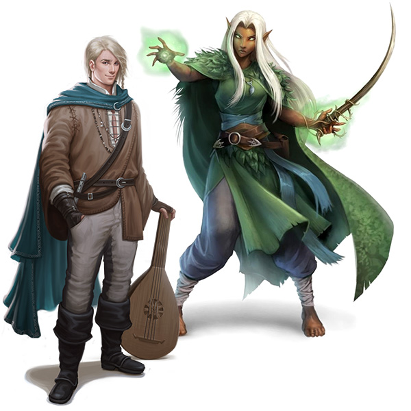

Elves and Half-Elves
The presence of elves in Celestia is indeed rare, as most elves reside in the neighboring kingdom of Eldoria. However, some elves may occasionally be seen among the followers of the more nature-based deities within Celestia, given the realm's association with nature and its reverence for natural beings.
Half-elves, on the other hand, are more common in Celestia, as many of them chose to stay with their non-elven kin when the elves departed to Eldoria. They are treated similarly to other races within Celestia, without discrimination as long as they do not exhibit any arcane leanings. They are considered part of the diverse population of Celestia and coexist with other races, integrated into society and contributing in various ways to the realm's culture, economy, and communities.
The treatment of half-elves in Celestia reflects a more inclusive and accepting attitude towards mixed-race individuals, as long as they do not possess traits or abilities associated with arcane magic. This may be influenced by the realm's emphasis on nature-based beliefs and deities, which prioritize a connection with the natural world over arcane magic.
